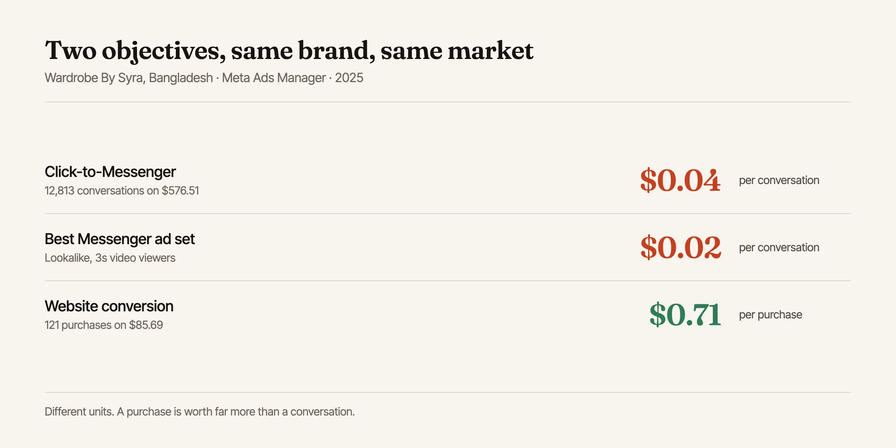

Why Click-to-Messenger Still Beats Conversion Ads in Bangladesh
One Eid campaign produced 12,813 message conversions on $576.51 of spend: about four cents a conversation. That result is not really about Messenger. It's about matching the campaign objective to how people in a market actually buy.
Where these numbers come from
Campaign data is from Meta Ads Manager accounts I managed for Wardrobe By Syra, a Bangladeshi clothing brand, across three campaigns in 2024–2025. Screenshots are in the case studies: Eid ul Adha, Eid campaign and conversion campaign. Spend figures are in USD as reported by Ads Manager.
If you learned paid social in a Western market, the instinct is automatic: send traffic to the site, fire a purchase event, optimise for conversions. Anything else feels like a soft metric.
Run that playbook in Bangladesh and you will usually get beaten by someone running a cruder-looking campaign that just opens a chat window.
The numbers that made me stop arguing with the market
Across the Eid ul Adha campaign for a clothing brand:
- $576.51 total spend
- 12,813 messaging conversations started
- 514,000 people reached
- Roughly $0.04 per conversation
On a second Eid campaign the average came in around $0.03 per message, with the best-performing ad set at about $0.02. For comparison, when I ran a conversion-objective campaign for the same brand optimising for website purchases, results were still good (121 purchases at an average $0.71, with the strongest product at $0.32) but the volume of top-of-funnel contact was in a completely different league.
Two different objectives, both profitable, doing two different jobs.

Why the conversational objective wins here
1. The storefront is already the inbox
A large share of Bangladeshi retail happens on Facebook Pages rather than standalone e-commerce sites: the "F-commerce" pattern, where a business shows products on a page, negotiates and confirms in Messenger, and settles by mobile financial services or cash on delivery. Industry reporting has put F-commerce turnover in the thousands of crore taka annually alongside conventional e-commerce [1].
When the inbox is the shop, pushing people to a website adds a step rather than removing one.
2. Cash on delivery makes conversation part of the purchase
Where cash on delivery is the norm, buyers expect to ask questions before committing: is this the real fabric, will it fit, when will it arrive, can I see another photo. A checkout page cannot answer those. A person can, in ninety seconds.
Trying to force that conversation into a static product page doesn't remove the friction. It just moves the drop-off somewhere you can't see it.
3. The signal problem barely applies
Website conversion campaigns depend on clean event data coming back from the browser, and that pipeline has been degraded for years by tracking restrictions. Messaging conversions are counted inside Meta's own surface. The optimisation signal is short, immediate, and hard to lose.
Meta has been leaning into this direction generally: click-to-message formats have been one of the company's faster-growing ad products, with reported year-on-year growth in business conversations well into double digits [2]. That is not a Bangladesh-only phenomenon, but Bangladesh is where the buyer behaviour and the ad format line up most cleanly.
What actually made these campaigns work
The objective choice gets you into the game. It doesn't produce four-cent conversations on its own.
Timing against the calendar. Both strongest campaigns ran into Eid. In a market where a large share of annual apparel spending compresses into a few weeks, the same creative and the same budget produce wildly different results in and out of season. Getting the timing right was worth more than any targeting refinement.
An opening line that invites a reply. The ad's job is not to sell. It is to make sending a message feel like the obvious next move. Ads that opened with a specific, answerable prompt (about size, price, availability) consistently beat ads that simply announced a collection.
Answering fast enough to matter. This is the part that has nothing to do with the ad account and decides whether it works. Thousands of conversations are worthless if nobody replies for six hours. On the biggest campaign the brand brought in extra staff to keep up. If you cannot staff the inbox, do not buy the conversations.
The trap
Message conversions are cheap and they look wonderful on a dashboard. They are a proxy. Unless you are tracking how many conversations become confirmed orders, a low cost per message can hide a badly qualified audience. Ask for the conversion rate from conversation to order before you celebrate.
When I would not use it
I run conversion campaigns instead when:
- The client has a genuine e-commerce site with working checkout and prepayment
- Nobody can commit to replying within minutes during campaign hours
- Average order value is high enough that a considered, research-led purchase path beats an impulse chat
- The business needs clean revenue attribution rather than conversation volume
For the same clothing brand, the conversion campaign at $0.71 per purchase was the right tool for a different job: selling specific catalogue items to people ready to buy, rather than opening the top of the funnel during a seasonal spike.
The transferable point
The best-performing objective is the one that matches how buying already happens in that market. In Bangladesh that is frequently a conversation, so a campaign that buys conversations cheaply will beat one that buys clicks to a page people were never going to check out on.
Before choosing an objective, watch how the business's existing customers actually order. Then buy more of that.
All the numbers in this post, with spend and sample size for each account: the full Messenger cost benchmark set.
Related reading
Not sure which objective your account should be running?
Send me your account and I'll look at how your buyers actually convert, then tell you where your budget is going to the wrong campaign type. No cost.
Get a free auditSources & further reading
- The Daily Star, Facebook and commerce: the unforeseen boom: e-CAB figures on Facebook-native retail turnover in Bangladesh.
- SQ Magazine, Facebook Messenger statistics: aggregated platform and click-to-message growth figures; secondary source, directional only.
- Primary data: Meta Ads Manager, client accounts managed by the author, 2024–2025. Screenshots in the Wardrobe By Syra case studies.